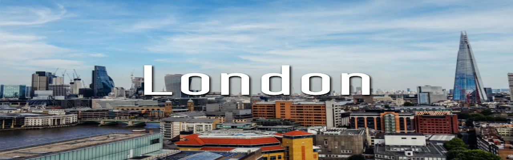

Trafalgar Square, plaza in the City of Westminster, London, named for Lord Nelson’s naval victory (1805) in the Battle of Trafalgar. Possibly the most famous of all London squares, Trafalgar Square has always been public and has had no garden. Seven major arteries pump automobiles around the great paved space, which is dominated by Nelson’s Column (1839–43), a 185-foot- (56-metre-) high monument to Lord Nelson that includes a 17-foot- (5-metre-) high statue of him by E.H. Baily. At the corners of the column’s plinth are four bronze lions sculpted by Sir Edwin Landseer and cast by Baron Marochetti.
Trafalgar Square was constructed between the 1820s and ’40s on the site of the former King’s Mews. It is flanked by the National Gallery and the church of St. Martin-in-the-Fields. The Charing Cross intersection is adjacent to the south, and from it the avenue of the Strand runs off to the City to the east, where its name changes to Fleet Street.
Traditions associated with Trafalgar Square include political rallies, caroling (in December) around a large Christmas tree sent from Norway (donated since World War II), and boisterous New Year’s Eve celebrations.

Hyde Park, park in the borough of Westminster, London. It covers more than 340 acres (138 hectares) and is bordered on the east by Mayfair and on the west by Kensington Gardens.
The park shares a large curved lake with its western neighbour; the portion of the lake in Kensington Gardens is known as the Long Water, whereas the Hyde Park portion is called the Serpentine. The lake is used for boating in the summer and skating in the winter. In the park’s northeastern corner, near Marble Arch, is Speakers’ Corner, which has long been a centre of free speech for soapbox orators. Also in the park are the Hudson Bird Sanctuary, a bandstand, large fountains, a ranger’s lodge, and, in the southeastern corner of the park, the statue of Achilles (1822), which recalls the duke of Wellington’s victories. Not far from the statue, and nearly adjoining the park, is the Wellington Museum (1952), which is housed in a structure built in 1771–78. Nearby starts a celebrated riding track, Rotten Row, which traverses the park westward.
Hyde Park was formerly a royal hunting preserve. It was opened to the public in the early 17th century. In 1851 it was the location of the Great Exhibition, which was held in the newly constructed Crystal Palace, a massive greenhouse-style exhibition hall that incorporated many of the park’s trees under its roof.

London Eye, formerly Millennium Wheel, revolving observation wheel, or Ferris wheel, in London, on the South Bank of the River Thames in the borough of Lambeth. At an overall height of 443 feet (135 metres), the London Eye was the world’s tallest Ferris wheel from 1999, when it was built, until 2006, when it was surpassed by the Star of Nanchang, in Nanchang, China. It is one of London’s most popular tourist attractions for which an admission fee is charged and is sometimes credited with sparking a worldwide revival of Ferris wheel construction.
What is now called the London Eye originated as an entry submitted by David Marks and Julia Barfield of Marks Barfield Architects in 1993 to a competition, sponsored by The Sunday Times and Great Britain’s Architecture Foundation, for a new landmark to commemorate the millennium in London. Although no winner was declared, Marks and Barfield undertook the development of the project themselves and found the site where the wheel now stands. Much of the funding was provided by British Airways. Construction began in 1998, and the wheel was put together over the river, in a horizontal position, before being pulled upright. The London Eye, as it was called by this time, was ceremonially “opened” by Prime Minister Tony Blair on December 31, 1999, but did not admit its first paying passenger until March 9, 2000. Originally scheduled to be dismantled after five years, it was kept in place because of continued popularity. In 2006 a decorative LED lighting system was installed in order to make the wheel more prominent after dark.
For centuries the riverside district was dominated by industrial plants and warehouses, but the aerial bombings that targeted Waterloo Station and other buildings of London in World War II ruined the area. With the preparations for the Festival of Britain (1951), which was devised as an economic stimulus to London, South Bank was transformed into a leading arts and cultural centre.

Madame Tussauds is a wax museum in London; it has smaller museums in a number of other major cities. It was founded by wax sculptor Marie Tussaud. It used to be spelled as "Madame Tussaud's"; the apostrophe is no longer used. Madame Tussauds is a major tourist attraction in London, displaying the waxworks of famous and historical figures, as well as popular film and television characters from famous actors.
Madame Tussaud's wax museum became a major tourist attraction in London. Until 2010 it incorporated the London Planetarium in its west wing. A large animated dark ride, The Spirit of London, opened in 1993. Today's wax figures at Tussauds include historical and royal figures, film stars, sports stars, and famous murderers. It has been known since 2007 as "Madame Tussauds" museums (no apostrophe).

Wembley Stadium, stadium in the borough of Brent in northwestern London, England, built as a replacement for an older structure of the same name on the same site. The new Wembley was the largest stadium in Great Britain at the time of its opening in 2007, with a seating capacity of 90,000. It is owned by a subsidiary of the Football Association and is used for football (soccer), rugby, and other sports and also for musical events.
The original Wembley Stadium, built to house the British Empire Exhibition of 1924–25, was completed in advance of the exhibition in 1923. It served as the principal venue of the London 1948 Olympic Games and remained in use until 2000. Construction of the new stadium began in 2002. The English firm Foster + Partners and the American stadium specialists HOK Sports Venue Event (now known as Populous) were the architects. Excavations to lower the elevation of the pitch (playing field) uncovered the foundations of Watkin’s Tower, a building project of the 1890s that would have been the world’s tallest structure had it been completed. The new stadium officially opened in March 2007.
Wembley Stadium is almost round in shape, with a circumference of 3,280 feet (1 km). The most striking architectural feature is a giant arch that is the principal support of the roof. The arch is 436 feet (133 metres) in height and is tilted 22° from the perpendicular. The movable stadium roof does not close completely but can shelter all the seats.
Wembley Stadium has hosted the Football Association Cup Final every year since the year of its completion. It is also the home of England’s national football team. During the London 2012 Olympic Games, the stadium was a venue for football, including the final (gold medal) match. American (gridiron) football is played at the stadium in the National Football League International Series.